Sistema de vistas configurables para el QB Playground. Un administrador define qué campos aparecen por operación y sede — los usuarios ven solo lo que necesitan, con efecto inmediato y sin tocar código.
Los cambios en un template se reflejan en el Playground sin reiniciar la aplicación.
Los campos obligatorios de QB Desktop no pueden desmarcarse — el sistema los bloquea.
Cada usuario elige su template preferido y el sistema lo recuerda entre sesiones.
La opción "Todos los campos" permite volver al contrato completo en cualquier momento.
El panel centraliza todos los templates del sistema. Cada template está asociado a una operación QB y una sede. El badge Default indica el template que el Playground aplica automáticamente al seleccionar esa combinación. Desde aquí el administrador puede crear, editar, marcar como default o eliminar templates.
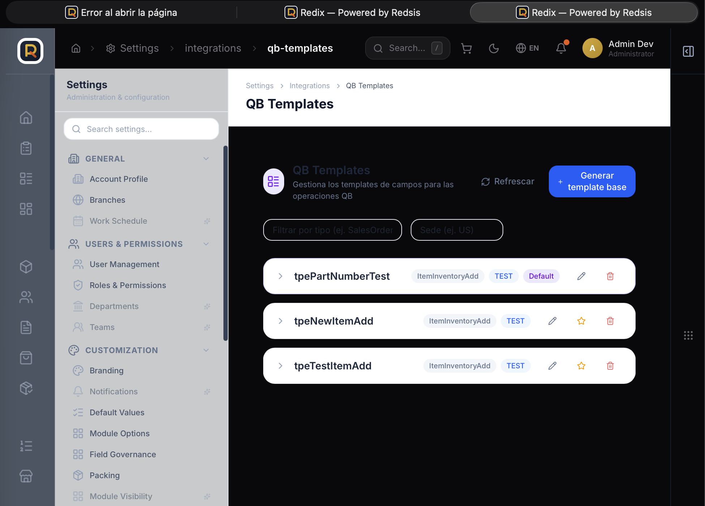
Al hacer clic en + Generar template base, el administrador selecciona el tipo de operación QB (ej. Item — Add), la sede (TEST · RUS · REC · RBR · RMX) y asigna un nombre descriptivo al template. El dropdown de sede muestra únicamente las sedes registradas en el sistema.
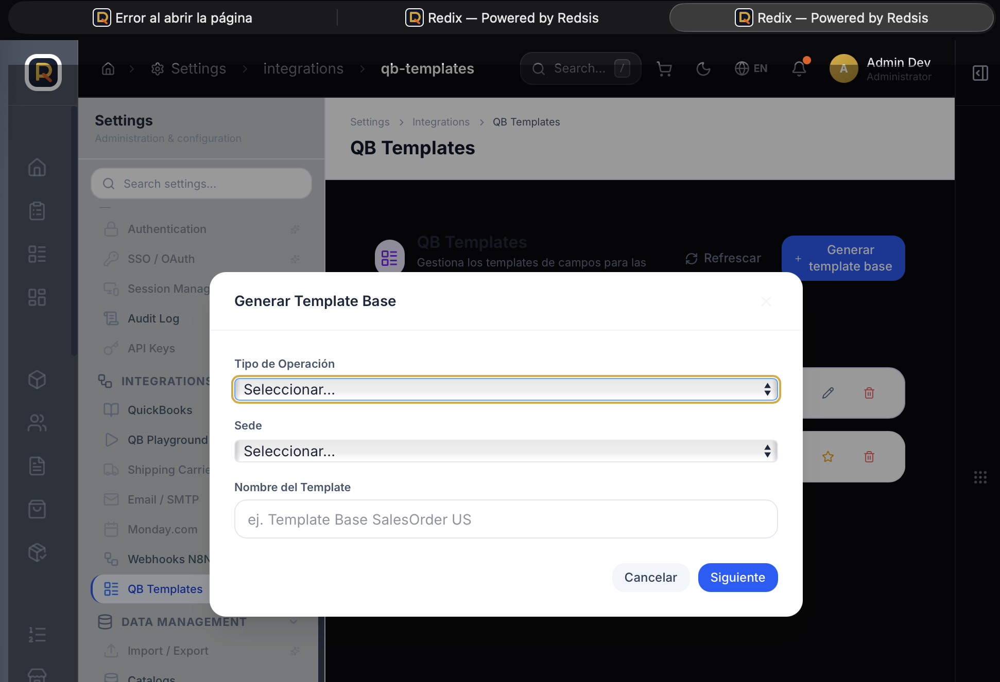
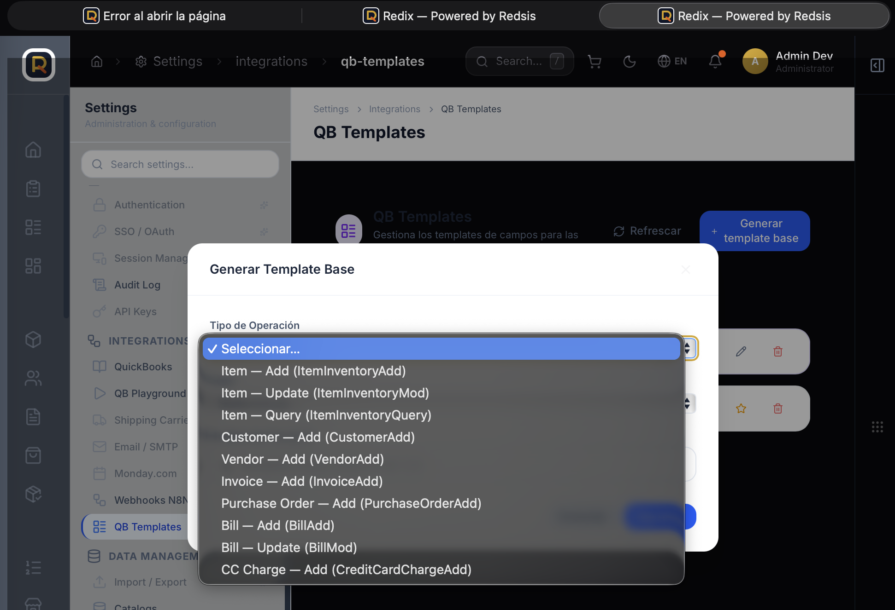
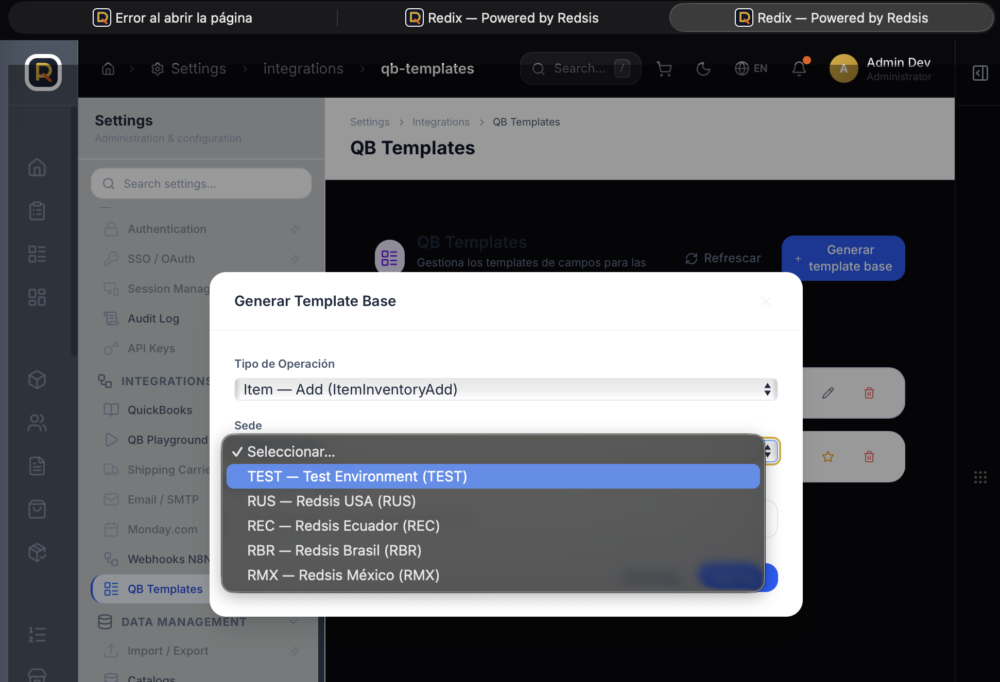
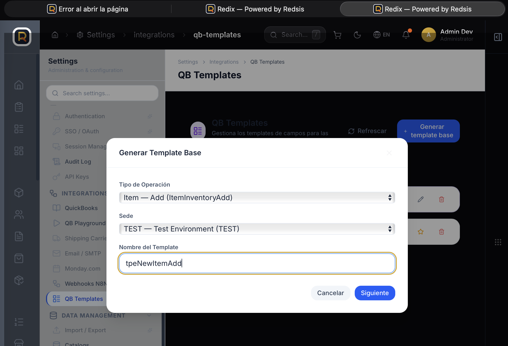
El sistema carga automáticamente todos los campos disponibles en el contrato QB para esa operación. Los campos marcados con req están pre-chequeados y bloqueados — son obligatorios para QB Desktop y no pueden desmarcarse. Los campos opcionales pueden activarse o desactivarse libremente. El label de cualquier campo puede editarse haciendo clic sobre el texto.
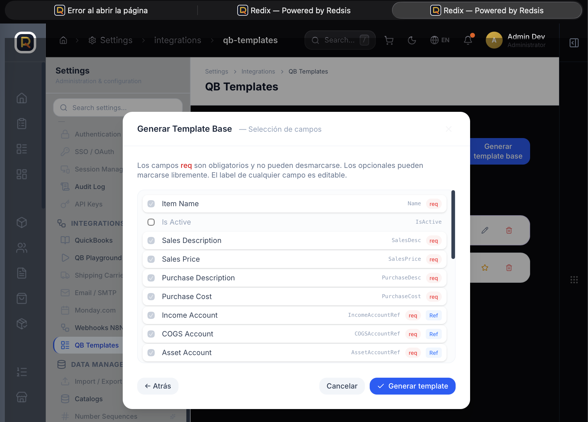
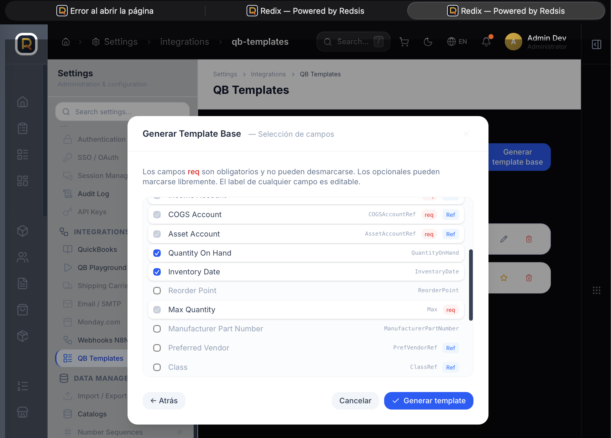
Al seleccionar una operación y sede que tiene template, el Playground muestra automáticamente el selector en el action bar. El formulario se adapta al template activo — en lugar de los 32 campos del contrato completo, el usuario ve únicamente los campos definidos en el template. El endpoint, versión y sede siguen visibles para referencia.
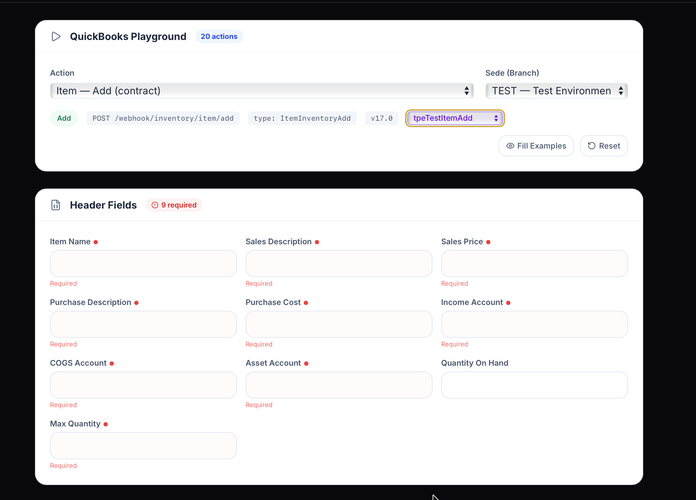
El selector incluye siempre la opción "Todos los campos". Al seleccionarla, el Playground muestra el contrato completo de QB Desktop con todos sus campos disponibles — incluyendo campos de referencia (Income Account, COGS Account, Asset Account, Preferred Vendor, Class, Parent Item, Unit of Measure, etc.). La preferencia guardada del usuario no se sobrescribe al usar esta opción.
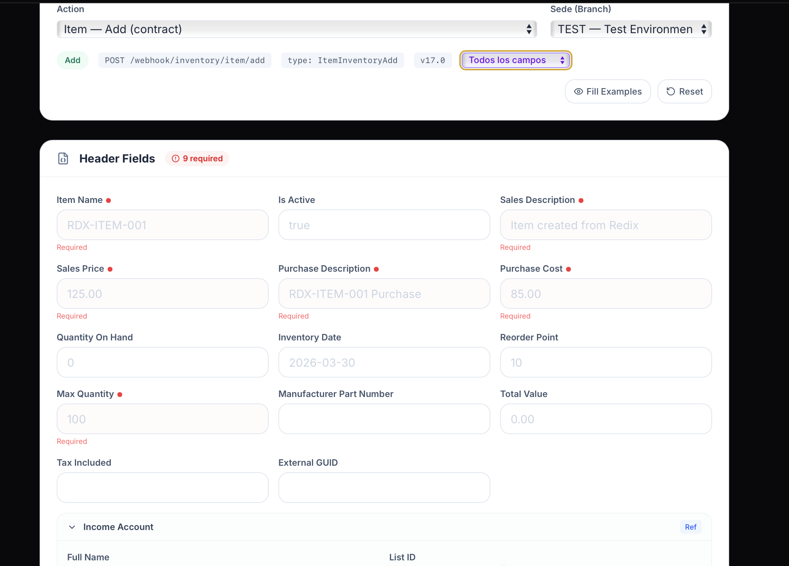
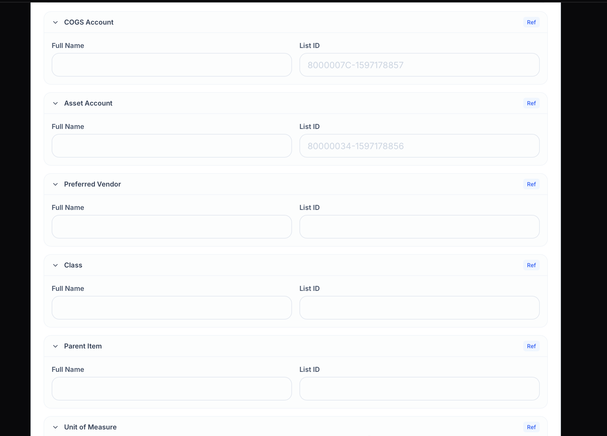
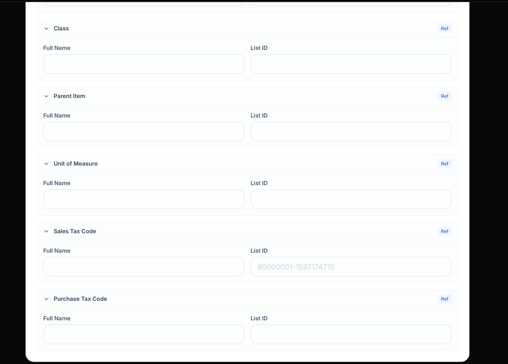
| Método | Ruta | Descripción |
|---|---|---|
| GET | /api/integration/qb-template |
Template activo + lista disponibles para un type+sede |
| GET | /api/integration/qb-template/list |
Lista todos los templates activos (uso admin) |
| POST | /api/integration/qb-template/generate |
Crear template con campos seleccionados |
| PUT | /api/integration/qb-template/:publicId |
Actualizar nombre y/o campos de un template |
| PUT | /api/integration/qb-template/:publicId/set-default |
Marcar como default para su type+sede |
| DELETE | /api/integration/qb-template/:publicId |
Soft-delete — is_active = false |
Obtiene el templateId guardado para el usuario actual (sede + operación). Respuesta en ~5ms desde DB local.
→ GET /api/integration/qb-template?type=X&sede=Y[&templateId=UUID] — campos del template desde DB de Redix
→ GET /api/integration/qb-contracts?type=X&sede=Y — requiredFields overlay desde LedgerOps
Si template ≠ null → formulario reducido con los campos del template.
Si template = null → formulario completo con todos los campos del contrato.
Aparece cuando existe al menos un template para la combinación activa. Incluye "Todos los campos" como opción siempre disponible.